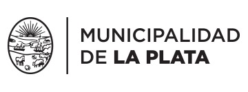

Historia
Museos
Talleres
Pasaje Dardo Rocha
Tenemos más de 50 talleres, que están relacionados con danzas, idiomas, letras, medios audiovisuales, música, plástica y teatro. Sumate a nuestra comunidad.
TALLERES
MUSEOS